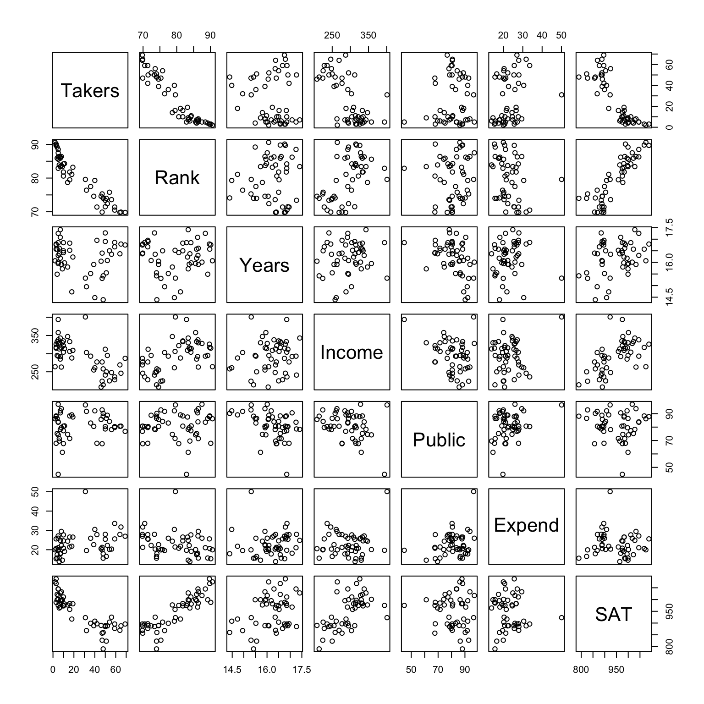
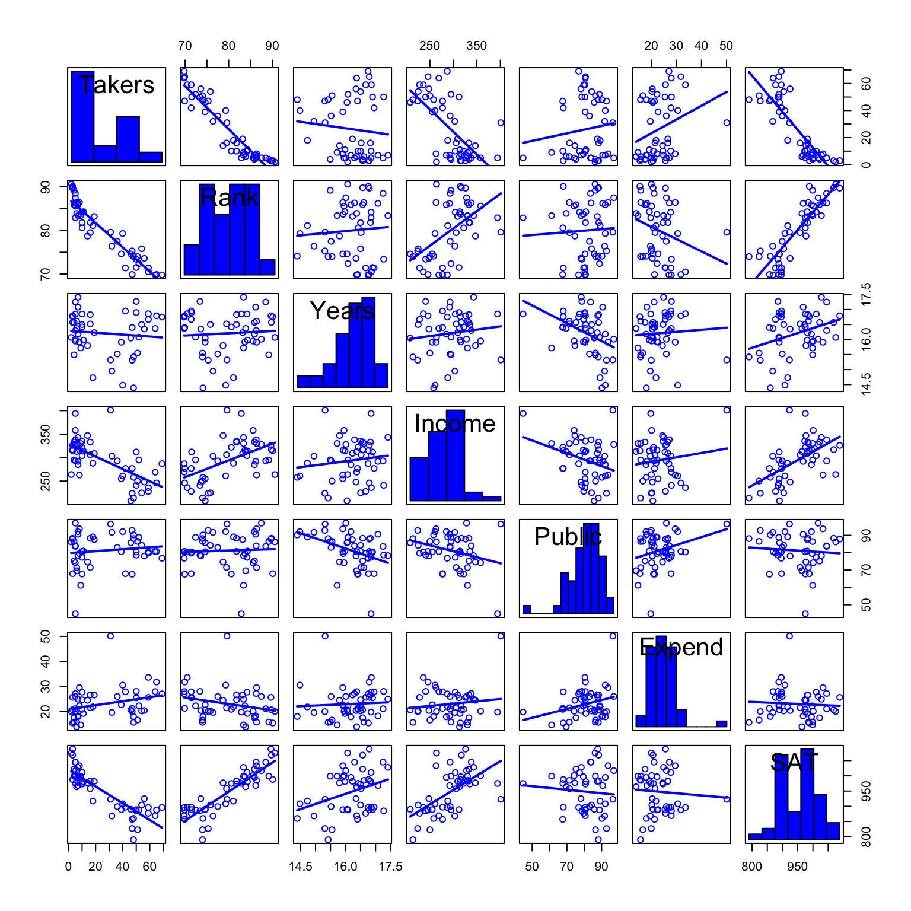
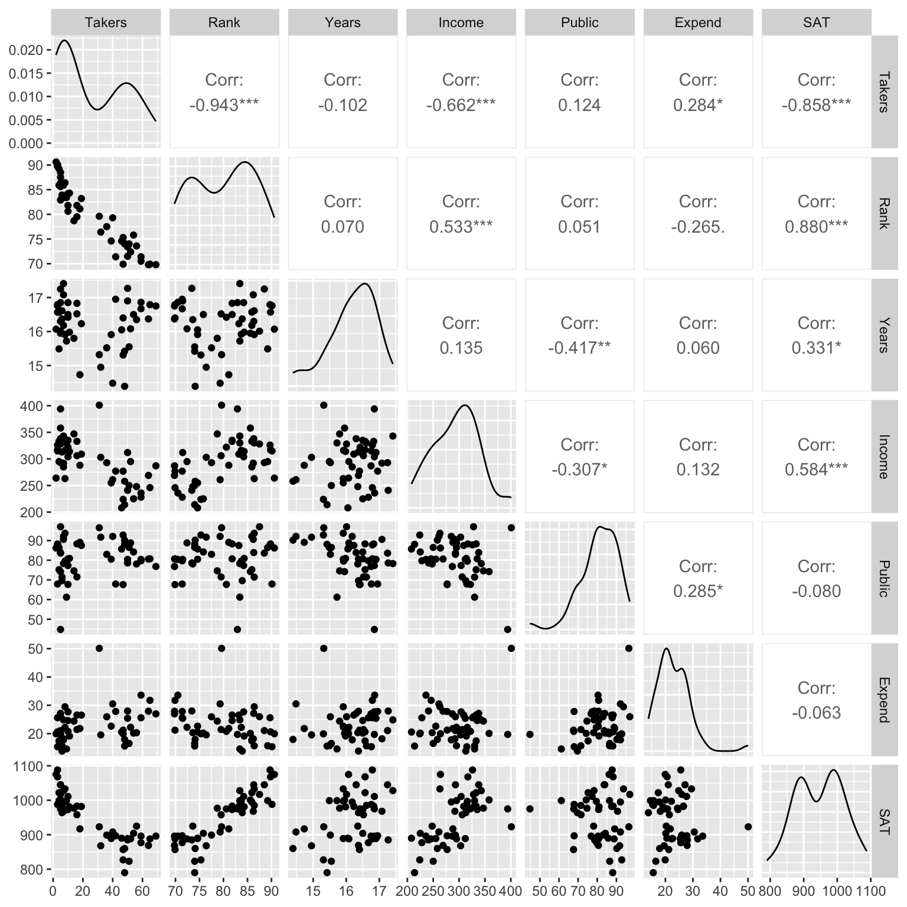
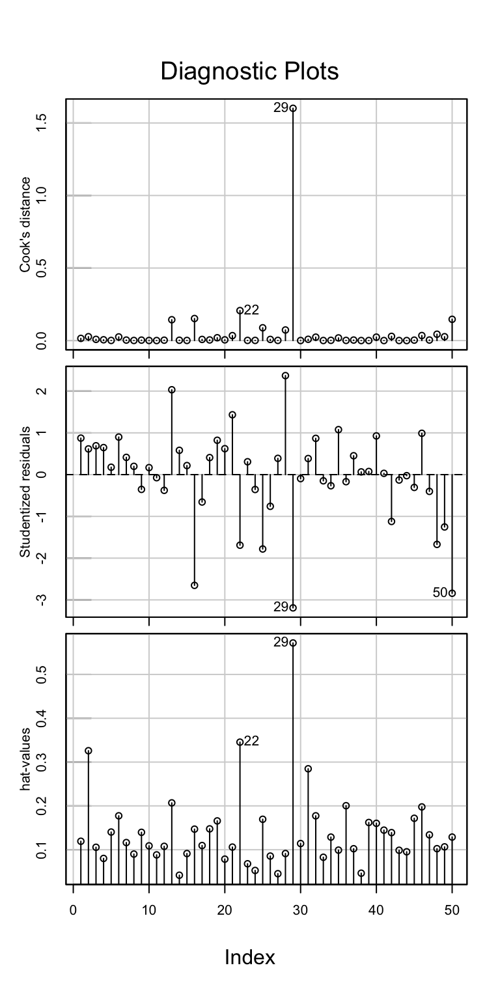
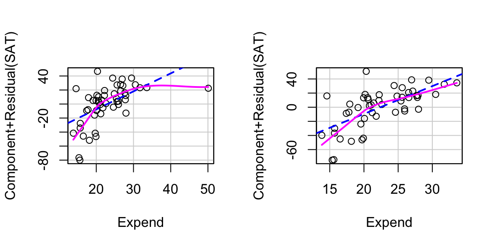
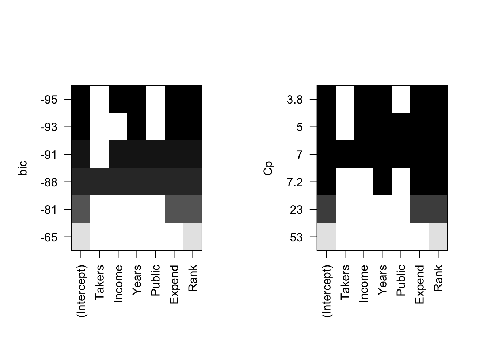
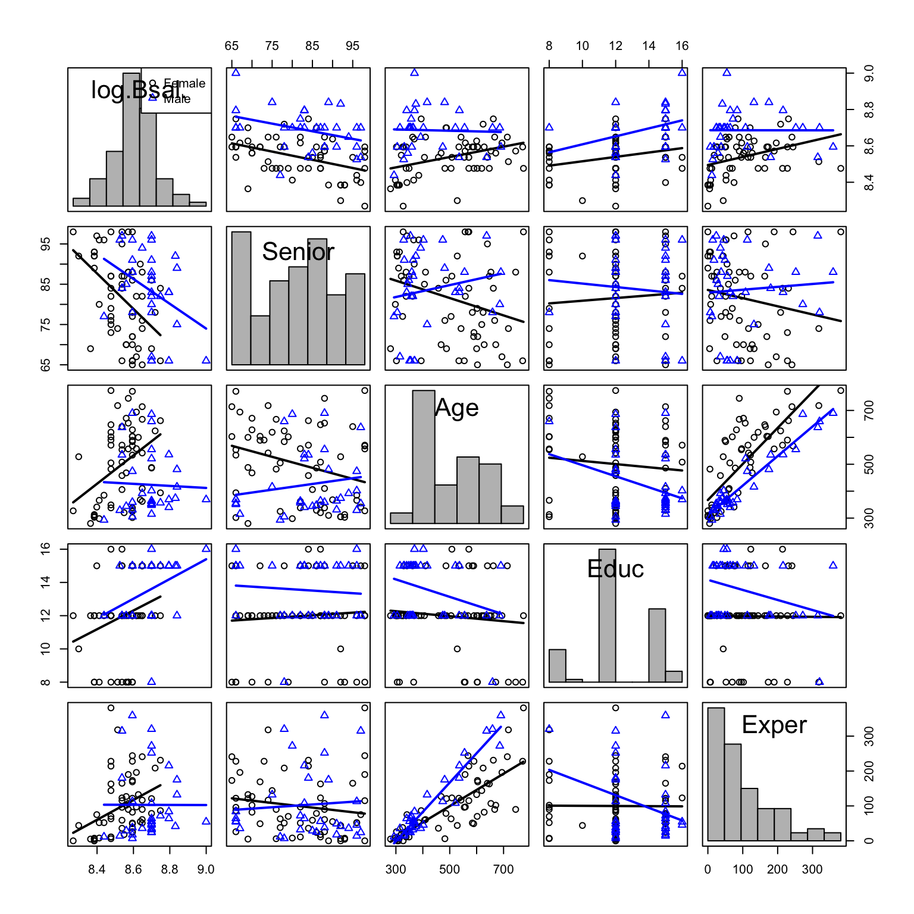
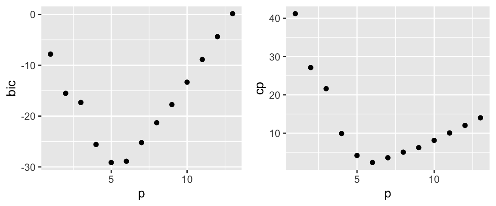

library(ggformula) # graphics
library(Sleuth3) # Sleuth data sets
library(broom) # extract pieces of lm output
library(gridExtra) # arrange multiple plots on a page
library(stargazer) # tables to display/compare models
library(car) # easy diagnostic plots
library(MASS) # For stepwise selecion
library(leaps) # for all subsets selection8 Strategies for Variable Selection
In this chapter we need to load the following packages (remember, you will need to install packages you have never used before if you are using your own computer).
We will also set some options to improve legibility of graphs and output.
# display four significant digits by default and no significance stars
options(digits = 3, show.signif.stars = FALSE) 9 State Average SAT Scores
What variables are associated with state SAT scores? This is the question addressed in case study 12.1 in the Sleuth.
9.1 Summary statistics
We begin by loading the data and summarizing the variables
summary(case1201) State SAT Takers Income Years
Alabama : 1 Min. : 790 Min. : 2.00 Min. :208 Min. :14.4
Alaska : 1 1st Qu.: 889 1st Qu.: 6.25 1st Qu.:262 1st Qu.:15.9
Arizona : 1 Median : 966 Median :16.00 Median :295 Median :16.4
Arkansas : 1 Mean : 948 Mean :26.22 Mean :294 Mean :16.2
California: 1 3rd Qu.: 998 3rd Qu.:47.75 3rd Qu.:325 3rd Qu.:16.8
Colorado : 1 Max. :1088 Max. :69.00 Max. :401 Max. :17.4
(Other) :44
Public Expend Rank
Min. :44.8 Min. :13.8 Min. :69.8
1st Qu.:76.9 1st Qu.:19.6 1st Qu.:74.0
Median :80.8 Median :21.6 Median :80.8
Mean :81.2 Mean :23.0 Mean :80.0
3rd Qu.:88.2 3rd Qu.:26.4 3rd Qu.:85.8
Max. :97.0 Max. :50.1 Max. :90.6
The data are shown on page 347 (display 12.1). A total of 50 state average SAT scores are included in this data set.
9.2 Dealing with Many Explanatory Variables
The following graph is presented as Display 12.4 (page 356).
pairs(~Takers + Rank + Years + Income + Public + Expend + SAT, data = case1201)
Using the car or GGally packages you can produce “fancier” versions of this scatterplot matrix:
# Using the car package
scatterplotMatrix(~Takers + Rank + Years + Income + Public + Expend + SAT,
diagonal=list(method ="histogram"), smooth = FALSE, data = case1201)
# Using the GGally package
library(GGally)
ggpairs(columns = c("Takers", "Rank", "Years", "Income", "Public", "Expend", "SAT"), data = case1201)
Based on the scatterplot matrix, we choose to transform the percentage of SAT takers using the (natural) logarithm. An initial model is then fit using the transformed percentage of SAT takers and median class rank (page 355-357):
case1_mod1 <- lm(SAT ~ Rank + log(Takers), data = case1201)
summary(case1_mod1)
Call:
lm(formula = SAT ~ Rank + log(Takers), data = case1201)
Residuals:
Min 1Q Median 3Q Max
-94.46 -17.31 5.32 22.82 48.47
Coefficients:
Estimate Std. Error t value Pr(>|t|)
(Intercept) 882.08 224.13 3.94 0.00027
Rank 2.40 2.33 1.03 0.30898
log(Takers) -45.19 14.06 -3.21 0.00236
Residual standard error: 31.1 on 47 degrees of freedom
Multiple R-squared: 0.815, Adjusted R-squared: 0.807
F-statistic: 103 on 2 and 47 DF, p-value: <2e-16From the regression output, we observe that these two variables can explain 81.5% of the variation in SAT scores.
Next we fit a linear regression model using all variables and create the partial residual plot presented as Display 12.5 (page 357).
case1_mod2 <- lm(SAT ~ log(Takers) + Income + Years + Public + Expend + Rank, data = case1201)
summary(case1_mod2)
Call:
lm(formula = SAT ~ log(Takers) + Income + Years + Public + Expend +
Rank, data = case1201)
Residuals:
Min 1Q Median 3Q Max
-61.11 -8.60 2.86 14.77 53.40
Coefficients:
Estimate Std. Error t value Pr(>|t|)
(Intercept) 407.5399 282.7633 1.44 0.1567
log(Takers) -38.4376 15.9521 -2.41 0.0203
Income -0.0359 0.1301 -0.28 0.7841
Years 17.2181 6.3201 2.72 0.0093
Public -0.1130 0.5624 -0.20 0.8417
Expend 2.5669 0.8064 3.18 0.0027
Rank 4.1143 2.5017 1.64 0.1073
Residual standard error: 24.9 on 43 degrees of freedom
Multiple R-squared: 0.892, Adjusted R-squared: 0.877
F-statistic: 59.2 on 6 and 43 DF, p-value: <2e-16According to the Cook’s distance plot, obs 29 (Alaska) seems to be an influential outlier. We may consider removing this observation from the data set.
infIndexPlot(case1_mod2, vars = c("Cook", "Studentized", "hat"))
Sleuth compares the coefficient for Expend with and without Alaska in the data set using the partial residual plots in Display 12.5.
case1_mod2na <- update(case1_mod2, subset = (State != "Alaska"))
tidy(case1_mod2na)# A tibble: 7 × 5
term estimate std.error statistic p.value
<chr> <dbl> <dbl> <dbl> <dbl>
1 (Intercept) 288. 259. 1.11 0.274
2 log(Takers) -30.2 14.7 -2.05 0.0462
3 Income 0.103 0.126 0.817 0.418
4 Years 13.1 5.88 2.23 0.0312
5 Public -0.101 0.511 -0.198 0.844
6 Expend 3.94 0.849 4.64 0.0000340
7 Rank 5.27 2.30 2.29 0.0269 par(mfrow = c(1,2))
crPlot(case1_mod2, variable = "Expend")
crPlot(case1_mod2na, variable = "Expend")
invisible(dev.off())The difference between these two slopes indicates that Alaska is an influential observation. Following the analysis presented in the text, we remove Alaska from the data set.
case1201na <- filter(case1201, State != "Alaska")9.3 Sequential Variable Selection
The book uses F-statistics as the criterion to perform the procedures of forward selection and backward elimination presented on page 359. As mentioned on page 359, the entire forward selection procedure required the fitting of only 16 of the 64 possible models presented on Display 12.6 (page 360). These 16 models utilized Expenditure and log(Takers) to predict SAT scores. Further, as mentioned on page 359, the entire backward selection procedure required the fitting of only 3 models of the 64 possible models. These 3 models used Year, Expenditure, Rank and log(Takers) to predict SAT scores.
To the best of our knowledge, there is not an automated solution in R to run step-wise selection or forward selection. You can implement these manually using the addterm() and dropterm() functions found in the MASS package. For example, starting with the full model outlined in Sleuth, we can take the first two steps in backward elimination using the F-test:
dropterm(case1_mod2na, test = "F")Single term deletions
Model:
SAT ~ log(Takers) + Income + Years + Public + Expend + Rank
Df Sum of Sq RSS AIC F Value Pr(F)
<none> 21397 312
log(Takers) 1 2150 23547 315 4.22 0.046
Income 1 340 21737 311 0.67 0.418
Years 1 2532 23928 315 4.97 0.031
Public 1 20 21417 310 0.04 0.844
Expend 1 10964 32361 330 21.52 3.4e-05
Rank 1 2679 24076 316 5.26 0.027Based on the above summary, Public is the term with the smallest F-statistic, so we should delete it.
drop1_mod <- update(case1_mod2na, . ~ . - Public)
tidy(drop1_mod)# A tibble: 6 × 5
term estimate std.error statistic p.value
<chr> <dbl> <dbl> <dbl> <dbl>
1 (Intercept) 291. 256. 1.14 0.261
2 log(Takers) -31.2 13.8 -2.26 0.0287
3 Income 0.113 0.113 1.01 0.319
4 Years 13.5 5.49 2.46 0.0180
5 Expend 3.87 0.774 5.00 0.0000100
6 Rank 5.06 2.01 2.52 0.0155 Now we determine what (if anything) should be eliminated next:
dropterm(drop1_mod, test = "F")Single term deletions
Model:
SAT ~ log(Takers) + Income + Years + Expend + Rank
Df Sum of Sq RSS AIC F Value Pr(F)
<none> 21417 310
log(Takers) 1 2552 23968 313 5.12 0.029
Income 1 505 21922 309 1.01 0.319
Years 1 3011 24428 314 6.05 0.018
Expend 1 12465 33882 330 25.03 1e-05
Rank 1 3162 24578 315 6.35 0.016Based on the above summary, Income is the term with the smallest F-statistic, so we should delete it.
drop2_mod <- update(drop1_mod, . ~ . - Income)
tidy(drop2_mod)# A tibble: 5 × 5
term estimate std.error statistic p.value
<chr> <dbl> <dbl> <dbl> <dbl>
1 (Intercept) 399. 232. 1.72 0.0929
2 log(Takers) -38.1 11.9 -3.20 0.00257
3 Years 13.1 5.48 2.40 0.0207
4 Expend 4.00 0.764 5.23 0.00000452
5 Rank 4.40 1.90 2.32 0.0252 This is our stopping point, since all of the F-statistics are greater than 4:
dropterm(drop2_mod, test = "F")Single term deletions
Model:
SAT ~ log(Takers) + Years + Expend + Rank
Df Sum of Sq RSS AIC F Value Pr(F)
<none> 21922 309
log(Takers) 1 5094 27016 317 10.22 0.0026
Years 1 2870 24792 313 5.76 0.0207
Expend 1 13620 35542 331 27.34 4.5e-06
Rank 1 2676 24598 313 5.37 0.0252When model selection is relatively guided (or the pool of variables is small) manual implementation is possible (albeit tedious). To automate the process we need to utilize either the AIC or BIC criteria for step-wise selection. Below, we demonstrate this procedure using AIC criterion.
To run forward selection, you need to start with some preliminary model. This could be the intercept-only model, but it seems reasonable to include one predictor to start. Here, we choose log(Taker) as our preliminary predictor because it has the largest F-value when we fitted case1201na as seen above. Further, we need to give the selection procedure an upper bound for complexity, here we use case1_mod2na.
# Forward selection
prelim_mod <- lm(SAT ~ log(Takers), data = case1201na)
stepAIC(prelim_mod, scope = list(upper = case1_mod2na, lower = ~1),
direction = "forward", trace = FALSE)$anovaStepwise Model Path
Analysis of Deviance Table
Initial Model:
SAT ~ log(Takers)
Final Model:
SAT ~ log(Takers) + Expend + Years + Rank
Step Df Deviance Resid. Df Resid. Dev AIC
1 47 46369 340
2 + Expend 1 20523 46 25846 313
3 + Years 1 1248 45 24598 313
4 + Rank 1 2676 44 21922 309To run backward elimination, we simply provide the richest model under consideration and specify the direction:
# Backward Elimination
stepAIC(case1_mod2na, direction="backward", trace=FALSE)$anovaStepwise Model Path
Analysis of Deviance Table
Initial Model:
SAT ~ log(Takers) + Income + Years + Public + Expend + Rank
Final Model:
SAT ~ log(Takers) + Years + Expend + Rank
Step Df Deviance Resid. Df Resid. Dev AIC
1 42 21397 312
2 - Public 1 20 43 21417 310
3 - Income 1 505 44 21922 309To run step-wise selection, we again specify the richest model under consideration and specify the direction:
# Stepwise Regression
stepAIC(case1_mod2na, direction="both", trace=FALSE)$anovaStepwise Model Path
Analysis of Deviance Table
Initial Model:
SAT ~ log(Takers) + Income + Years + Public + Expend + Rank
Final Model:
SAT ~ log(Takers) + Years + Expend + Rank
Step Df Deviance Resid. Df Resid. Dev AIC
1 42 21397 312
2 - Public 1 20 43 21417 310
3 - Income 1 505 44 21922 309In this case study, the final model includes log(Takers), Expenditure, Years, and Rank. The final model can explain 91.1% percent or the variation of SAT.
final_mod <- lm(SAT ~ log(Takers) + Years + Expend + Rank, case1201na)
summary(final_mod)
Call:
lm(formula = SAT ~ log(Takers) + Years + Expend + Rank, data = case1201na)
Residuals:
Min 1Q Median 3Q Max
-52.30 -9.92 0.60 11.88 59.20
Coefficients:
Estimate Std. Error t value Pr(>|t|)
(Intercept) 399.115 232.372 1.72 0.0929
log(Takers) -38.100 11.915 -3.20 0.0026
Years 13.147 5.478 2.40 0.0207
Expend 3.996 0.764 5.23 4.5e-06
Rank 4.400 1.899 2.32 0.0252
Residual standard error: 22.3 on 44 degrees of freedom
Multiple R-squared: 0.911, Adjusted R-squared: 0.903
F-statistic: 112 on 4 and 44 DF, p-value: <2e-16Note, the three procedures do not always agree, so you should think of the results as a few competing models to further explore.
Additionally, remember that the full (i.e. richest) model should be checked for deficiencies and multicollinearity prior to being used with model selection.
9.4 Model Selection Among All Subsets
The \(C_p\)-statistic can be an useful criterion to select model among all subsets. Here, we give an example about how to calculate this statistic for one model, which includes log(Takers), Expenditure, Years and Rank.
sigma_final <- summary(final_mod)$sigma^2 # sigma-squared of chosen model
sigma_full <- summary(case1_mod2na)$sigma^2 # sigma-squared of full model
n <- 49 # sample size
p <- 4 + 1 # number of coefficients in model
Cp <- (n - p) * sigma_final / sigma_full + (2 * p - n)
Cp[1] 4.03AIC and BIC are also useful criteria and each can be easily calculated for any fitted regression model. Below we calculate AIC and BIC for case1_mod2na:
AIC(case1_mod2na)[1] 453BIC(case1_mod2na)[1] 468While it can be useful to calculate these criteria for a fitted model, to conduct all-subsets model selection we turn to the implementation in the leaps package. To run model selection through an exhaustive search of all models we can use the regsubsets command.
predictors <- dplyr::select(case1201na, -State, -SAT)
response <- case1201na$SAT
allsubsets_results <- regsubsets(x = predictors, y = response, method = "exhaustive")
allsubsets_resultsSubset selection object
6 Variables (and intercept)
Forced in Forced out
Takers FALSE FALSE
Income FALSE FALSE
Years FALSE FALSE
Public FALSE FALSE
Expend FALSE FALSE
Rank FALSE FALSE
1 subsets of each size up to 6
Selection Algorithm: exhaustiveBy default, regsubsets returns information about the top performing model of each size. To return the top n models of each size, add the argument nbest = n (where you specify n) to the call. To access the values of BIC and \(C_p\), first run summary:
# Calculate the summary of the selection
top_models <- summary(allsubsets_results)
top_models$cp # print Cp[1] 53.25 22.67 7.19 3.75 5.00 7.00top_models$bic # print BIC[1] -65.4 -81.3 -92.5 -94.5 -91.5 -87.6Alternatively, you can plot the results:
par(mfrow = c(1,2))
plot(allsubsets_results, scale = "bic")
plot(allsubsets_results, scale = "Cp")
10 Sex Discrimination in Employment
Do females receive lower starting salaries than similarly qualified and similarly experience males and did females receive smaller pay increases than males? These are the questions explored in case 12.2 in the Sleuth.
10.1 Summary Statistics
We begin by summarizing the data.
summary(case1202) Bsal Sal77 Sex Senior Age Educ
Min. :3900 Min. : 7860 Female:61 Min. :65.0 Min. :280 Min. : 8.0
1st Qu.:4980 1st Qu.: 9000 Male :32 1st Qu.:74.0 1st Qu.:349 1st Qu.:12.0
Median :5400 Median :10020 Median :84.0 Median :468 Median :12.0
Mean :5420 Mean :10393 Mean :82.3 Mean :474 Mean :12.5
3rd Qu.:6000 3rd Qu.:11220 3rd Qu.:90.0 3rd Qu.:590 3rd Qu.:15.0
Max. :8100 Max. :16320 Max. :98.0 Max. :774 Max. :16.0
Exper
Min. : 0.0
1st Qu.: 35.5
Median : 70.0
Mean :100.9
3rd Qu.:144.0
Max. :381.0 The data is shown on page 350-351 as display 12.3. A total of 93 employee salaries are included: 61 females and 32 males. Next, we present a full graphical display for the variables within the data set and the log of the beginning salary variable.
scatterplotMatrix(~log(Bsal) + Senior + Age + Educ + Exper | Sex,
diagonal=list(method ="histogram"),
col = carPalette(),
smooth = FALSE,
data = case1202)
Through these scatterplots it appears that beginning salary should be on the log scale and the starting model without the effects of gender will be a saturated second-order model variables including Seniority, Age, Education, Experience, as main effects, quadratic terms, and their full interactions (See Display 12.10 on page 367). The code below runs all subset model selection on this model. Note that the typical model conventions (having the main effect for a variable if it’s quadratic or interaction term are included) are not followed, so you need to think about these results.
10.2 Model Selection
To determine the best subset of these variables we compare \(C_p\) and BIC statistics. Display 12.11 shows the \(C_p\) statistics for models that meet ‘good practice’ and have small \(C_p\) values. We will demonstrate how to calculate the \(C_p\) statistics for the two models with the lowest \(C_p\) statistics discussed in “Identifying Good Subset Models” on pages 367-368.
case1202_subsets <- regsubsets(log(Bsal) ~ (Senior + Age + Educ + Exper)^2 + I(Senior^2) +
I(Age^2) + I(Age^2) + I(Exper^2),
nvmax=25,
data=case1202)
case1202_summary <- summary(case1202_subsets)The results can be a bit tough to digest, so it can be useful to make an index plot of the metric of interest.
p <- apply(case1202_summary$which, 1, sum) # number of coefs in models
index_df <- data.frame(p = p - 1, bic = case1202_summary$bic,
cp = case1202_summary$cp)
bic_plot <- gf_point(bic ~ p, data = index_df)
cp_plot <- gf_point(cp ~ p, data = index_df)
grid.arrange(bic_plot, cp_plot, ncol = 2)
Using both BIC a model with 5 slope coefficients is flagged as “best” and using \(C_p\) a model with 6 slope coefficients is flagged as “best”. We can see the terms and their estimates by using the coef() command:
coef(case1202_subsets, id = 5)(Intercept) Educ Exper Senior:Educ Age:Exper Educ:Exper
8.07e+00 5.92e-02 4.53e-03 -2.78e-04 -3.65e-06 -1.42e-04 coef(case1202_subsets, id = 6)(Intercept) Educ Exper I(Age^2) Senior:Educ Age:Educ Age:Exper
7.90e+00 8.95e-02 3.82e-03 1.27e-06 -2.48e-04 -9.54e-05 -5.32e-06 Looking at the coefficients we see that these models do not follow model-fitting convention. For example, Senior:Educ is in the model without Senior. If you wish to use a method that follows this convention, then using a sequential model selection approach can be considered.
ssom <- lm(log(Bsal) ~ (Senior + Age + Educ + Exper)^2 + I(Senior^2) + I(Age^2) +
I(Exper^2), data = case1202)
case1202_step <- stepAIC(ssom, direction = "backward", k = log(nrow(case1202)), trace = 0)
summary(case1202_step)
Call:
lm(formula = log(Bsal) ~ Senior + Age + Educ + Exper + Age:Educ +
Age:Exper, data = case1202)
Residuals:
Min 1Q Median 3Q Max
-0.2817 -0.0476 0.0132 0.0605 0.2341
Coefficients:
Estimate Std. Error t value Pr(>|t|)
(Intercept) 7.89e+00 2.45e-01 32.21 < 2e-16
Senior -3.15e-03 1.04e-03 -3.04 0.00313
Age 1.24e-03 4.02e-04 3.09 0.00270
Educ 7.20e-02 1.67e-02 4.31 4.3e-05
Exper 2.86e-03 6.67e-04 4.28 4.8e-05
Age:Educ -1.02e-04 3.15e-05 -3.25 0.00166
Age:Exper -3.72e-06 1.02e-06 -3.65 0.00044
Residual standard error: 0.0974 on 86 degrees of freedom
Multiple R-squared: 0.469, Adjusted R-squared: 0.431
F-statistic: 12.6 on 6 and 86 DF, p-value: 3.58e-10The final model selected by backwards elimination matches the one proposed by Sleuth. To finish their analysis, the authors add Sex into the model:
discrim_mod <- update(case1202_step, . ~ . + Sex)
summary(discrim_mod)
Call:
lm(formula = log(Bsal) ~ Senior + Age + Educ + Exper + Sex +
Age:Educ + Age:Exper, data = case1202)
Residuals:
Min 1Q Median 3Q Max
-0.17822 -0.05197 -0.00203 0.05301 0.20466
Coefficients:
Estimate Std. Error t value Pr(>|t|)
(Intercept) 8.16e+00 2.21e-01 36.99 < 2e-16
Senior -3.48e-03 9.09e-04 -3.83 0.00024
Age 9.15e-04 3.57e-04 2.56 0.01218
Educ 4.23e-02 1.57e-02 2.70 0.00836
Exper 2.18e-03 5.98e-04 3.65 0.00045
SexMale 1.20e-01 2.29e-02 5.22 1.3e-06
Age:Educ -5.46e-05 2.91e-05 -1.88 0.06402
Age:Exper -3.23e-06 8.96e-07 -3.61 0.00052
Residual standard error: 0.0853 on 85 degrees of freedom
Multiple R-squared: 0.598, Adjusted R-squared: 0.564
F-statistic: 18 on 7 and 85 DF, p-value: 1.79e-14Note: If you use regsubsets() for selection, you have to refit the selected model using lm() as usual in order to make predictions, etc.